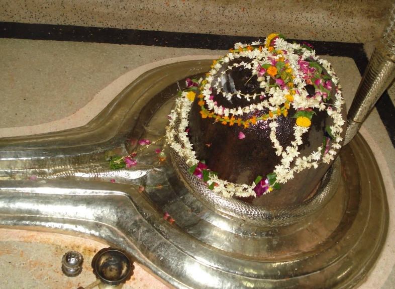

<?xml version="1.0" encoding="UTF-8"?><rss version="2.0"
	xmlns:content="http://purl.org/rss/1.0/modules/content/"
	xmlns:wfw="http://wellformedweb.org/CommentAPI/"
	xmlns:dc="http://purl.org/dc/elements/1.1/"
	xmlns:atom="http://www.w3.org/2005/Atom"
	xmlns:sy="http://purl.org/rss/1.0/modules/syndication/"
	xmlns:slash="http://purl.org/rss/1.0/modules/slash/"
	>

<channel>
	<title>Bharabhooteshwar &#8211; Varanasi Temples</title>
	<atom:link href="index.html" rel="self" type="application/rss+xml" />
	<link>../../../../../index.html</link>
	<description>Temples of Varanasi as referred to in Kashi Khand</description>
	<lastBuildDate>Thu, 19 Jun 2025 05:16:46 +0000</lastBuildDate>
	<language>en-US</language>
	<sy:updatePeriod>hourly</sy:updatePeriod>
	<sy:updateFrequency>1</sy:updateFrequency>
	<generator>https://wordpress.org/?v=4.6.29</generator>
	<item>
		<title>BHARABHOOTESHWAR</title>
		<link>../../../../../shiva-temples/bharabhooteshwar/index.html</link>
		<pubDate>Sun, 09 May 2010 05:33:18 +0000</pubDate>
		<dc:creator><![CDATA[admin]]></dc:creator>
				<category><![CDATA[Bharabhooteshwar]]></category>
		<category><![CDATA[Other Shiva Temples (A-D)]]></category>
		<category><![CDATA[Shiva Temples]]></category>
		<category><![CDATA[bhara]]></category>
		<category><![CDATA[bharabhooteshwar]]></category>

		<guid isPermaLink="false">../../../../../p=259.html</guid>
		<description><![CDATA[Lord Shiva was in Mandarachal and he sent several batches of Shiv Gans to Kashi to create disturbance in the city and distract King Divodas.  (For details, refer to Kukkuteshwar). (BHARA BHOOTESHWAR) In one of the batches, one Shiv Gan named Bhara Bhoot installed a Shiv Ling called Bhara Bhooteshwar. Devotees who worship this Ling [&#8230;]]]></description>
				<content:encoded><![CDATA[<p>Lord Shiva was in Mandarachal and he sent several batches of Shiv Gans to Kashi to create disturbance in the city and distract King Divodas.  (For details, refer to Kukkuteshwar).</p>
<p></p>
<p style="text-align: center;"><strong>(BHARA BHOOTESHWAR)</strong></p>
<p>In one of the batches, one Shiv Gan named Bhara Bhoot installed a Shiv Ling called Bhara Bhooteshwar.</p>
<p style="text-align: left;">Devotees who worship this Ling in Kashi will attain Mukti.  Kashi Khand, Chapter 55 further states that those who do not worship this deity will remain a burden in this earth just as a huge tree which does not yield any fruits.</p>
<p style="text-align: left;">
<p><strong>&#8212;&#8212;&#8212;&#8212;&#8212;&#8212;&#8212;&#8212;&#8212;&#8212;&#8212;&#8212;&#8212;&#8212;&#8212;&#8212;&#8212;&#8212;&#8212;&#8212;&#8212;&#8212;&#8212;&#8212;&#8212;&#8212;&#8212;&#8212;&#8212;&#8212;&#8212;&#8212;&#8212;&#8212;-</strong></p>
<p><strong> </strong></p>
<p><span style="text-decoration: underline;"><strong>Kashi Khand, Chapter 55, Shlok 13</strong></span></p>
<p><strong> </strong></p>
<p><strong>भारभूतेश्वरं लिङ्गं भारभूतगणार्चितं</strong></p>
<p><strong>अन्तर्गृहोत्तरद्वारि ध्यात्वा शिवपुरे वसेत्</strong></p>
<p>&nbsp;</p>
<p><strong>Those who worship/meditate on Bharabhooteshwar Ling which is located towards north entrance of Antar Grih and  worshipped by Bhara Bhoot Shivgan,  will get residence in shiv lok. </strong></p>
<p><strong> </strong></p>
<p><strong>&#8212;&#8212;&#8212;&#8212;&#8212;&#8212;&#8212;&#8212;&#8212;&#8212;&#8212;&#8212;&#8212;&#8212;&#8212;&#8212;&#8212;&#8212;&#8212;&#8212;&#8212;&#8212;&#8212;&#8212;&#8212;&#8212;&#8212;&#8212;&#8212;&#8212;&#8212;&#8212;&#8212;&#8212;&#8212;</strong></p>
<h1></h1>
<h1>LOCATION OF BHARABHOOTESHWAR</h1>
<p>Bharabhooteshwar is located at Ck.54/44, Raja Darwaja.  If a devotee proceeds from Chowk to Neechibaug, immediately after Chowk Police Station there is a left turn which leads to Raja Darwaja.  After walking for about 150 yards, there is a small right turning where this temple is situated.  Devotees may ask for directions in the general locality.  Devotees can reach Raja Darwaja by rickshaw.  At times due to heavy rush, they may have to get down at Chowk – Neechibaug road and walk on foot to Raja Darwaja.</p>
<p><strong>TYPES OF POOJA</strong></p>
<p>The temple remains open from 06.00 a.m. to 09.00 a.m. and for about 2 hours in the evening. Timings are flexible.  However, there is a grilled window through which devotees can have darshan throughout.</p>
]]></content:encoded>
			</item>
	</channel>
</rss>
